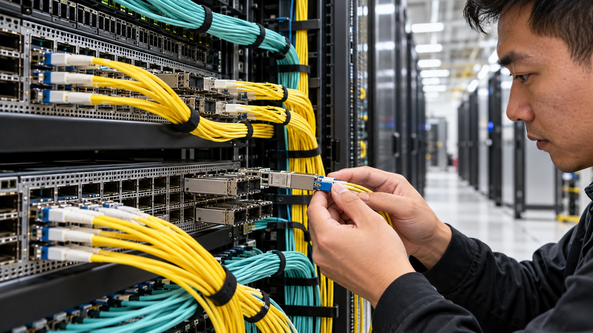

Broadcom’s OCP Lineup Shows Why AI Needs More Than GPUs
Networking and optics take center stage at this week’s summit. Product specifications matter only if they improve the performance of the complete system.
TTN Research Desk ·

Broadcom is using this week’s Open Compute Project Global Summit in San Jose to showcase the connections behind large AI systems. Its October 8 announcement lists Ethernet switches, network interface cards, PCIe components and integrated optics for the October 12–15 event. The emphasis is on moving data, not merely adding processors. Broadcom, October 8: OCP Global Summit networking announcement
The lineup includes Tomahawk 6, Tomahawk Ultra and Jericho 4 switches, Thor Ultra 800G and Thor 2 400G network interface cards, and third-generation TH6-Davisson co-packaged optics. These are the company’s announced products and specifications. TTN has not independently benchmarked them.
A fast processor can still wait for data
In a distributed workload, useful work depends on coordination between processors. An accelerator that waits for data is not delivering its full potential, however impressive its individual specification. The network can therefore affect how much useful output a buyer obtains from an expensive compute installation. Broadcom, October 8: OCP Global Summit networking announcement
That does not mean every AI workload needs the same network. Communication patterns differ with model design, job size and the way work is divided. A specification that suits one workload may add cost without delivering the same benefit to another.
A meaningful purchasing comparison begins with the job the system must complete. Time to an accepted result, utilization under that workload and behavior when components fail are more useful than treating a single peak bandwidth number as a ranking of whole systems.
Optics changes the engineering tradeoffs
Broadcom’s announcement places integrated optics alongside its switching and interface products. The company presents the portfolio as a way to address bandwidth and efficiency requirements as AI infrastructure expands. Those performance claims remain vendor claims until evaluated in the buyer’s operating conditions.
TTN’s assessment is that a network decision must include how the equipment will be maintained. Installation, component replacement, troubleshooting and the availability of spare parts all affect the economics of a deployment. A component that looks efficient in isolation can still create operational friction.
The complete system also needs compatible interfaces and a workable software environment. Hardware from several vendors may satisfy individual specifications while requiring additional integration work. That work belongs in the cost and schedule of the project, rather than being treated as a minor task after procurement.
Open designs do not eliminate execution risk
An open infrastructure ecosystem can give buyers more design choices. It does not remove the need to verify the actual configuration they intend to deploy. Compatibility in a presentation and repeatable performance in a production installation are different milestones.
A useful evaluation would keep the workload and quality standard constant while comparing configurations. It would measure sustained performance rather than a short peak, include power across the relevant equipment and record the time required for setup and recovery from failures.
The commercial comparison should be equally consistent. An attractive device price can be offset by additional cabling, support or integration costs. Conversely, a more expensive component can be justified if its system-level benefit survives a realistic test. The outcome depends on the deployment.
From a summit announcement to usable capacity
For investors, an announced product portfolio establishes a technical direction. It does not establish customer adoption, the timing of revenue or the profit on a particular installation. Those conclusions require separate evidence from orders, deployments and financial reporting.
For operators, the question is whether networking improvements reduce the cost of completing real work. That links this technical story to the financing debate around AI: better utilization can strengthen a project’s economics, but only if it is demonstrated rather than assumed.
Broadcom’s OCP presentation draws attention to a part of AI infrastructure that GPU headlines often overlook. The network deserves that attention. Its value should be judged by the functioning system it helps create, not by the prominence of the product launch.
Sources and reporting notes
Published October 13, 2026. Dated reporting and company disclosures are identified below. TTN’s interpretation is analysis; forecasts, hypothetical examples and vendor claims are distinguished from observed results.
Related reading: The balance-sheet constraint on AI · The cost of a completed AI task.
For informational purposes. This article is not investment advice.